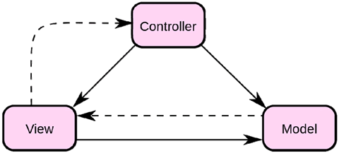
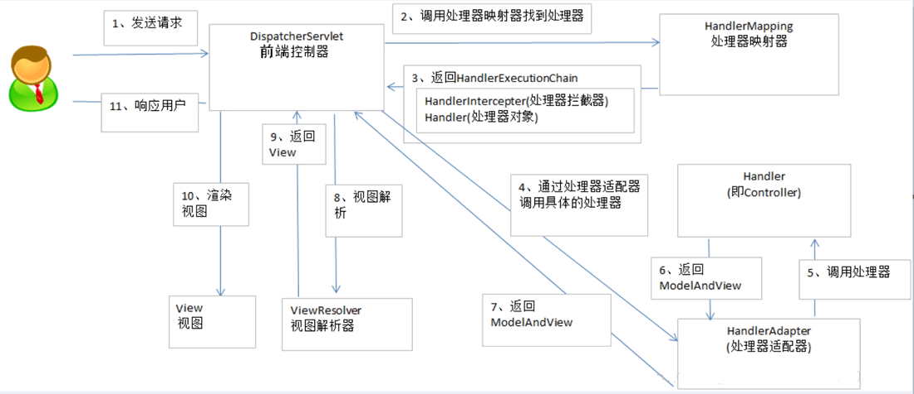

首页 > 编程笔记
Spring MVC介绍（非常详细）
介绍 Spring MVC 之前，首先要了解什么是 MVC 结构。
下面详细介绍视图、模型和控制器的具体内容以及它们之间的关系。
随着应用的复杂性和规模性的增长，界面的处理也变得具有挑战性。一个应用可能有很多不同的视图，MVC 设计模式对于视图的处理仅限于视图上数据的采集和处理，以及用户的请求，而不包括在视图的业务流程的处理。业务流程的处理交予模型（Model）处理。比如一个订单的视图只接受来自模型的数据并显示给用户，以及将用户界面的输入数据和请求传递给控制和模型。
业务模型的设计可以说是 MVC 的核心。目前流行的 EJB 模型就是一个典型的应用例子，它从应用技术实现的角度对模型做了进一步的划分，以便充分利用现有的组件，但它不能作为应用设计模型的框架。它仅仅告诉你按这种模型设计就可以利用某些技术组件，从而减少了技术上的困难。对一个开发者来说，就可以专注于业务模型的设计。
MVC 设计模式告诉我们，把应用的模型按一定的规则抽取出来。抽取的层次很重要，这也是判断开发人员的设计是否优秀的依据。抽象与具体不能隔得太远，也不能太近。
MVC 并没有提供模型的设计方法，而只告诉你应该组织管理这些模型，以便于模型的重构和提高重用性。我们可以用对象编程来做比喻，MVC 定义了一个顶级类，告诉它的子类你只能做这些，但无法限制你能做这些。这点对编程的开发人员非常重要。
业务模型还有一个很重要的模型——数据模型，主要是指实体对象的数据保存（持续化）。比如将一张订单保存到数据库，从数据库获取订单。我们可以将这个模型单独列出，所有有关数据库的操作只限制在该模型中。
划分控制层的作用也很明显，它清楚地告诉你，它就是一个分发器，选择什么样的模型，选择什么样的视图，可以完成什么样的用户请求。
控制层并不做任何数据处理。例如，用户单击一个链接，控制层接受请求后，并不处理业务信息，只是把用户的信息传递给模型，告诉模型做什么，选择符合要求的视图返回给用户。因此，一个模型可能对应多个视图，一个视图可能对应多个模型。
模型、视图与控制器的分离，使得一个模型可以具有多个显示视图。如果用户通过某个视图的控制器改变了模型的数据，那么所有其他依赖于这些数据的视图都应反映出这些变化。因此，无论何时发生了何种数据变化，控制器都会将变化通知所有的视图，显示更新。这实际上是一种模型的变化——传播机制。
三层之间的关系，可以总结为：
这三层既是紧密联系在一起的，又是互相独立的，每一层内部的变化不影响其他层。每一层都对外提供接口（Interface），供上面一层调用。这样一来，软件就可以实现模块化，修改外观或者变更数据都不用修改其他层，大大方便了维护和升级。
Spring 框架提供了构建 Web 应用程序的全功能 MVC 模块。在使用 Spring 进行 Web 开发时，可以选择使用 Spring MVC 框架或集成其他 MVC 开发框架，如 Struts1（现在一般不用）、Struts2 等。
Spring MVC 已经成为目前主流的 MVC 框架，并且随着 Spring 新版本的发布，全面超越 Struts2，成为优秀的 MVC 框架。
它通过一套注解，让一个简单的 Java 类成为处理请求的控制器，而无须实现任何接口，同时它还支持 RESTful 编程风格的请求。
另外，还有 RESTful 风格的支持、简单的文件上传、约定大于配置的契约式编程支持、基于注解的零配置支持等。
它们的区别有以下几点：
一般情况下，需要通过页面标签或者页面模板技术将模型数据通过页面展示给用户，需要由程序员根据业务需求开发具体的页面。
Spring MVC 典型的工作流程如下图所示：
具体说明如下：
MVC架构
MVC（Model-View-Controller，模型-视图-控制器）模式用于应用程序的分层开发，如下图所示。

下面详细介绍视图、模型和控制器的具体内容以及它们之间的关系。
1、视图
视图（View）代表用户交互界面，对于 Web 应用来说，可以概括为 HTML 界面，但有可能为 XHTML、XML 和 Applet。随着应用的复杂性和规模性的增长，界面的处理也变得具有挑战性。一个应用可能有很多不同的视图，MVC 设计模式对于视图的处理仅限于视图上数据的采集和处理，以及用户的请求，而不包括在视图的业务流程的处理。业务流程的处理交予模型（Model）处理。比如一个订单的视图只接受来自模型的数据并显示给用户，以及将用户界面的输入数据和请求传递给控制和模型。
2、模型
模型（Model）就是业务流程/状态的处理以及业务规则的制定。业务流程的处理过程对其他层来说是黑箱操作，模型接受视图请求的数据并返回最终的处理结果。业务模型的设计可以说是 MVC 的核心。目前流行的 EJB 模型就是一个典型的应用例子，它从应用技术实现的角度对模型做了进一步的划分，以便充分利用现有的组件，但它不能作为应用设计模型的框架。它仅仅告诉你按这种模型设计就可以利用某些技术组件，从而减少了技术上的困难。对一个开发者来说，就可以专注于业务模型的设计。
MVC 设计模式告诉我们，把应用的模型按一定的规则抽取出来。抽取的层次很重要，这也是判断开发人员的设计是否优秀的依据。抽象与具体不能隔得太远，也不能太近。
MVC 并没有提供模型的设计方法，而只告诉你应该组织管理这些模型，以便于模型的重构和提高重用性。我们可以用对象编程来做比喻，MVC 定义了一个顶级类，告诉它的子类你只能做这些，但无法限制你能做这些。这点对编程的开发人员非常重要。
业务模型还有一个很重要的模型——数据模型，主要是指实体对象的数据保存（持续化）。比如将一张订单保存到数据库，从数据库获取订单。我们可以将这个模型单独列出，所有有关数据库的操作只限制在该模型中。
3、控制器
控制器（Controller）可以理解为从用户接收请求，将模型与视图匹配在一起，共同完成用户的请求。划分控制层的作用也很明显，它清楚地告诉你，它就是一个分发器，选择什么样的模型，选择什么样的视图，可以完成什么样的用户请求。
控制层并不做任何数据处理。例如，用户单击一个链接，控制层接受请求后，并不处理业务信息，只是把用户的信息传递给模型，告诉模型做什么，选择符合要求的视图返回给用户。因此，一个模型可能对应多个视图，一个视图可能对应多个模型。
模型、视图与控制器的分离，使得一个模型可以具有多个显示视图。如果用户通过某个视图的控制器改变了模型的数据，那么所有其他依赖于这些数据的视图都应反映出这些变化。因此，无论何时发生了何种数据变化，控制器都会将变化通知所有的视图，显示更新。这实际上是一种模型的变化——传播机制。
三层之间的关系，可以总结为：
- 最上面的一层是直接面向最终用户的“视图层”（View）。它是提供给用户的操作界面，是程序的外壳。
- 最下面的一层是核心的“模型层”（Model），也就是程序需要操作的数据或信息。
- 中间的一层是“控制器层”（Controller），负责根据用户从“视图层”输入的指令选取“模型层”中的数据，然后对其进行相应的操作，产生最终结果。
这三层既是紧密联系在一起的，又是互相独立的，每一层内部的变化不影响其他层。每一层都对外提供接口（Interface），供上面一层调用。这样一来，软件就可以实现模块化，修改外观或者变更数据都不用修改其他层，大大方便了维护和升级。
Spring MVC框架
Spring MVC 是一种基于 Java 的、实现了 MVC 设计模型的请求驱动类型的轻量级 Web 框架，属于 Spring FrameWork 的后续产品，已经融合在 Spring Web Flow 里面。Spring 框架提供了构建 Web 应用程序的全功能 MVC 模块。在使用 Spring 进行 Web 开发时，可以选择使用 Spring MVC 框架或集成其他 MVC 开发框架，如 Struts1（现在一般不用）、Struts2 等。
Spring MVC 已经成为目前主流的 MVC 框架，并且随着 Spring 新版本的发布，全面超越 Struts2，成为优秀的 MVC 框架。
它通过一套注解，让一个简单的 Java 类成为处理请求的控制器，而无须实现任何接口，同时它还支持 RESTful 编程风格的请求。
Spring MVC的优势
-
清晰的角色划分。框架中的各个角色如下：
- 前端控制器（DispatcherServlet）。
- 请求到处理器映射（HandlerMapping）。
- 处理器适配器（HandlerAdapter）。
- 视图解析器（ViewResolver）。
- 处理器或页面控制器（Controller）。
- 验证器（Validator）。
- 命令对象（Command 请求参数绑定到的对象）。
- 表单对象（Form Object 提供给表单展示和提交到的对象）。
- 分工明确，而且扩展点相当灵活，很容易扩展。
- 命令对象就是一个 POJO，无须继承框架特定 API，可以使用命令对象直接作为业务对象。
- 和 Spring 其他框架无缝集成，是其他 Web 框架所不具备的。
- 可适配，通过 HandlerAdapter 可以支持任意的类作为处理器。
- 可定制性，HandlerMapping、ViewResolver 等能够非常简单地定制。
- 功能强大的数据验证、格式化、绑定机制。
- 利用 Spring 提供的 Mock 对象能够非常简单地进行 Web 层单元测试。
- 本地化、主题的解析的支持，使我们更容易进行国际化和主题的切换。
- 强大的 JSP 标签库，使 JSP 编写更容易。
另外，还有 RESTful 风格的支持、简单的文件上传、约定大于配置的契约式编程支持、基于注解的零配置支持等。
Spring MVC和Struts2的优略分析
它们的共同点如下：- 它们都是表现层框架，都是基于 MVC 模型编写的。
- 它们的底层都离不开原始 Servlet API。
- 它们处理请求的机制都是一个核心控制器。
它们的区别有以下几点：
- Spring MVC 的入口是 Servlet，而 Struts2是 Filter。
- Spring MVC 是基于方法设计的，而 Struts2 是基于类的，Struts2 每次执行都会创建一个动作类。所以，Spring MVC 会稍微比 Struts2 快一些。
- Spring MVC 使用更加简洁，同时还支持 JSR303，处理 Ajax 的请求更方便。JSR303 是一套 JavaBean 参数校验的标准，它定义了很多常用的校验注解，我们可以直接将这些注解加在 JavaBean 属性上，在需要校验的时候进行校验。
- struts2 的 OGNL 表达式使页面的开发效率相比 Spring MVC 更高一些，但是执行效率并没有比 JSTL 提升，尤其是 struts2 的表单标签，远没有 HTML 执行效率高。
Spring MVC工作流程
要把 Spring MVC 流程搞明白，首先需要知道 6 个组件。1) DispatcherServlet（中央控制器）
DispatcherServlet 是核心组件。用户在浏览器输入 URL，发起请求，首先会到达 DispatcherServlet，由它来调用其他组件配合工作的完成。DispatcherServlet 的存在大大降低了组件之间的耦合性。2) HandlerMapping（处理器映射器）
HandlerMapping 记录 URL 与处理器的映射，方式有注解、XML 配置等。3) HandLer（Controller，处理器）
HandLer 是后端控制器（通俗一点就是 Controller 层所写的业务代码），对用户的请求进行处理。4) HandlerAdapter（处理器适配器）
通过 HandlerAdapter 对处理器进行处理，这是适配器模式的应用，通过扩展适配器可以对更多类型的处理器进行处理。5) ViewResolver（视图解析器）
ViewResolver 负责解析 View（视图），并进行渲染（数据填充），将处理结果通过页面展示给用户。6) View（视图）
View 是一个接口，实现类支持不同的 View 类型（JSP、FreeMarker、Velocity）。一般情况下，需要通过页面标签或者页面模板技术将模型数据通过页面展示给用户，需要由程序员根据业务需求开发具体的页面。
Spring MVC 典型的工作流程如下图所示：

具体说明如下：
- 用户发送请求至前端控制器 DispatcherServlet。
- 前端控制器 DispatcherServlet 收到请求后调用处理器映射器 HandlerMapping。
- 处理器映射器 HandlerMapping 根据请求的 URL 找到具体的处理器，生成处理器对象 Handler 及处理器拦截器 HandlerIntercepter（如果有则生成），并返回前端控制器 DispatcherServlet。
- 前端控制器 DispatcherServlet 通过处理器适配器 HandlerAdapter 调用处理器 Controller。
- 调用处理器（Controller，也叫后端控制器）。
- 处理器 Controller 执行完后返回 ModelAndView。
- 处理器映射器 HandlerAdapter 将处理器 Controller 执行返回的结果 ModelAndView 返回给前端控制器 DispatcherServlet。
- 前端控制器 DispatcherServlet 将 ModelAndView 传给视图解析器 ViewResolver。
- 视图解析器 ViewResolver 解析后返回具体的视图 View。
- 前端控制器 DispatcherServlet 对视图 View 进行渲染视图（将模型数据填充至视图中）。
- 前端控制器 DispatcherServlet 响应用户。
关注公众号「站长严长生」，在手机上阅读所有教程，随时随地都能学习。内含一款搜索神器，免费下载全网书籍和视频。

微信扫码关注公众号